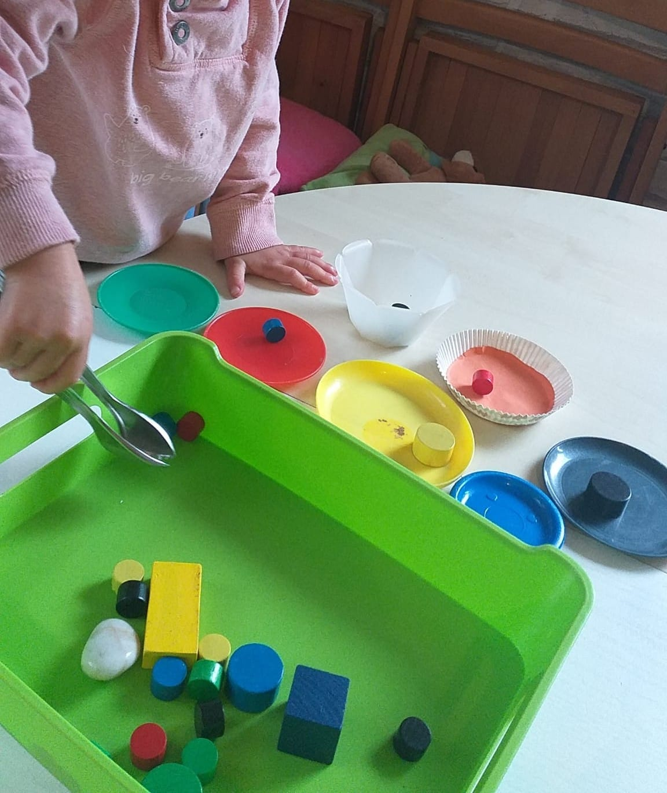

Herzlich Willkommen in meiner Kindertagespflege in Bad Pyrmont!
Die Kindertagespflege Abenteuerland befindet sich an der Kurfürstenstr. 4 31812 Bad Pyrmont. Sie liegt zentrumsnah, verkehrsgünstig und naturnah in einem ruhigen Wohngebiet. Mein großer Garten grenzt mit einem öffentlichen Spielplatz an der Dunsthöhle, wo wir oft sehr viel Zeit verbringen können.
Ich bin eine anerkannte und qualifizierte Tagespflegeperson vom Jugendamt des Kreises Hameln-Pyrmont und bin seit 2013 als Tagesmutter tätig.
Ich nehme Kinder ab einem Alter von 1 bis 11 Jahren auf. Die kleinen Kinder können bei mir so lange bleiben, bis sie einen Kindergartenplatz haben. Nach Bedarf biete ich eine Nachmittagsbetreuung für die Kindergartenkinder oder schulpflichtigen Kinder als Ergänzung zur Kita oder Schule an, wenn die Betreuungszeiten dort nicht ausreichen.
Die Räume meiner Kindertagespflege in Bad Pyrmont sind kindgerecht ausgestattet, gesichert und bieten Platz für vielfältige Entdeckungen.

Was versteht man unter einer Kindertagespflege?
Die Kindertagespflege ist, wie die Kita auch, eine offizielle gesetzlich anerkannte Betreuungsform. Mit ihren familienähnlichen Strukturen ist sie besonders gut für die Kinder U3 geeignet. Eine Kindertagespflegeperson betreut bis zu 5 Kinder und kann dadurch sehr individuell auf die Bedürfnisse jedes einzelnen Kindes und Wünsche der Eltern eingehen. In der Kindertagespflege ist die Gruppengröße klein, was aus pädagogischer Sicht für den Entwicklungsprozess für Kinder unten 3 Jahren ideal ist. Vor allem in den ersten Lebensjahren haben Kinder so die Möglichkeit, soziale Erfahrungen in einer kleinen Gruppe im Rahmen einer familiennahen Betreuung mit einer festen Bezugsperson zu machen.
Aber auch für Kinder Ü3 Jahren bietet sich KTP als Betreuungsform an. Durch einen öffentlichen Träger (Jugendamt) erfolgt die Vermittlung, Überwachung und Finanzierung. In einem partnerschaftlichen Verhältnis kontrolliert das Jugendamt die Kindertagespflegestellen, koordiniert Weiterbildungen und ist auch Ansprechpartner für Fragen der Eltern.